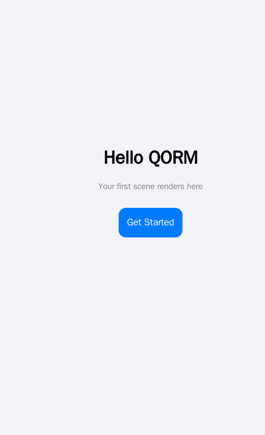

First Scene
A scene is QORM's UI entry point. A scene has an id and a root node root; the node tree describes the UI. Text content goes in the text field, and {{ state.x }} interpolates global state.
Minimal scene
{
"type": "scene",
"id": "main",
"root": { "type": "text", "id": "hello", "text": "Hello QORM" }
}Scene with layout
Container nodes (column / row) arrange their children using style (padding, spacing, background) and layout (size, alignment).
{
"type": "scene",
"id": "main",
"root": {
"type": "column",
"id": "root",
"style": { "padding": 24, "gap": 12 },
"layout": { "width": "fill", "height": "fill", "align": "center" },
"children": [
{ "type": "text", "id": "title", "text": "Title" },
{ "type": "button", "id": "submit", "text": "Submit", "onPress": "save" }
]
}
}- Use
text(notvalue) for text; template interpolation like"Welcome, {{ state.user }}"also goes intext. - Buttons use
onPressto trigger actions (see First Action). - For all available node types, see the Widget catalog.

A scene renders to a screen — text nodes plus a button laid out by a column.Lists and item scope
A list binds data to an array and repeats one renderItem template. Inside that template the row is item, and its position is index (0-based) plus the first / last flags.
{
"type": "list", "id": "rows", "data": "{{ state.items }}",
"renderItem": {
"type": "row", "children": [
{ "type": "text", "text": "{{ index + 1 }}." },
{ "type": "text", "text": "{{ item.title }}" }
]
}
}index / first / last are separate scope names, so a data field of the same name is never shadowed: {{ item.index }} is your data, {{ index }} is the loop position.
Nested lists rebind item on the inner loop. Give the outer list an as alias to keep it reachable — "as": "section" binds section plus sectionIndex / sectionFirst / sectionLast:
{
"type": "list", "data": "{{ state.sections }}", "as": "section",
"renderItem": {
"type": "column", "children": [
{ "type": "text", "text": "{{ section.title }}" },
{ "type": "list", "data": "{{ section.rows }}",
"renderItem": { "type": "text", "text": "{{ section.title }} / {{ item }}" } }
]
}
}An invalid or reserved alias falls back to item with a load-time warning. gridview takes the same as and the same scope names.
List props worth knowing
| Prop | What it does |
|---|---|
separator | draws a hairline between items — true, or { "height": 1, "inset": 16, "color": "…" }. Never after the last item |
pageSize + page | built-in pagination: only one window of data renders. page is 1-based and clamps into range, so an overshooting page shows the last one instead of a blank screen |
groupBy + sectionHeader | splits consecutive runs of an equal key into sections with a header label. The renderer never reorders your data — sort it first |
sticky + stickyTop | section headers stick while scrolling (sticky defaults to true); stickyTop parks them below an appbar |
onRefresh | pull-to-refresh; dispatches the named action |
reorderable + onReorder | press-hold drag to reorder |
{
"type": "list", "id": "contacts", "data": "{{ state.contacts }}",
"groupBy": "letter", "sectionHeader": "{{ item.letter }}", "stickyTop": 44,
"separator": true, "pageSize": 50, "page": "{{ state.page }}",
"onRefresh": "reloadContacts",
"renderItem": { "type": "listtile", "text": "{{ item.name }}" }
}index stays global to the whole data, not to the current page, so numbering keeps counting across pages. groupBy and reorderable are not combined (section headers would misindex the drag), and reorderable takes precedence over onRefresh (both would claim the same drag gesture).
Note that virtualize is a rendering hint (content-visibility), not real windowing — the full item markup is still produced. Use pageSize when you need the DOM itself to stay small.
Tabs and panels
tabs takes its labels from a tabs array and its panels from children, matched by index:
{
"type": "tabs", "id": "detail",
"tabs": ["Overview", "Specs", "Reviews"],
"active": "{{ state.tab }}",
"scrollable": true, "swipe": true, "lazy": true,
"indicator": "pill", "indicatorColor": "var(--accent)",
"onChange": "tabChanged",
"children": [
{ "type": "text", "id": "t1", "text": "Overview…" },
{ "type": "text", "id": "t2", "text": "Specs…" },
{ "type": "text", "id": "t3", "text": "Reviews…" }
]
}| Prop | What it does |
|---|---|
active | which tab is open, 0-based. Out of range clamps into range |
scrollable | a horizontally scrolling tab bar; the active tab is scrolled into view automatically, however it changed |
swipe | drag a panel sideways to the neighbouring tab. It activates that neighbour's own control, so it behaves the same in every mode; there is no wrap-around at the ends |
lazy | render only the active panel |
indicator · indicatorColor | "pill" or "none" (anything else is the default underline), tinted by indicatorColor |
Binding active to a plain {{ state.x }} path makes the tabs controlled: the tab bar writes that state key itself, so switching tabs needs no action file at all, and any other node bound to the same key follows along. An expression like {{ state.i + 1 }} is not a plain path, so it renders a read-only value instead.
onChange fires on every switch with two args merged in: index (the 0-based position, as a string) and tab (the label). lazy needs the tabs to be controlled or to carry an onChange — with neither, switching happens purely in the browser and could only reveal panels that are already in the DOM, so lazy is ignored. indicatorColor needs the node to have a plain identifier id, and its value passes through a strict character allowlist, so anything that could end a CSS declaration is dropped rather than emitted.
Tables with widgets in cells
table and datatable render data against a columns list. A column is a key string, or an object with value (the data key), label (the header text), width and sticky.
By default a cell is the plain text of obj[key]. Give the table a child node carrying column and that column renders your widget instead:
{
"type": "table", "id": "people",
"data": "{{ state.people }}",
"columns": [
{ "value": "name", "label": "Name", "width": 180, "sticky": true },
{ "value": "role", "label": "Role" }
],
"stickyHeader": true, "stickyTop": 44,
"scrollX": true, "maxHeight": 420, "minWidth": 720,
"children": [
{ "type": "tag", "id": "role", "column": "role", "label": "{{ row.role }}" },
{ "type": "text", "id": "bio", "detail": true, "label": "Details", "text": "{{ row.bio }}" }
]
}Inside a cell template the row is row, its position is rowIndex / rowFirst / rowLast, and the cell itself is cell — {{ cell.value }}, {{ cell.column }}, {{ cell.index }}. This is the same alias machinery a list uses, so "as": "person" renames the set to person / personIndex / personFirst / personLast, and an outer list's item stays reachable alongside it.
A child carrying detail: true is not a column — it renders an expandable row under every row, using the browser's own disclosure control. Its label (or text) is the summary line, evaluated in the row scope.
The chrome keys are table-level, except sticky, which belongs to a column object:
| Key | Effect |
|---|---|
stickyHeader + stickyTop | the header row freezes while the body scrolls; stickyTop parks it below an appbar |
scrollX | the table scrolls horizontally inside its own box |
maxHeight | the body scrolls vertically inside that height |
minWidth | keeps columns from crushing when scrollX is on |
column sticky | freezes that leading column while the table scrolls sideways |
datatable takes all of the above on top of its own selection and sorting props. Neither widget has built-in paging — see First action.
Accordion, tree, timeline, carousel
| Widget | Props worth knowing |
|---|---|
accordion | active is the index of the open panel (bindable, clamped, defaults to the first). single: true makes the panels exclusive — opening one closes the rest; the default is independent toggles |
tree | collapsed: true starts every branch closed. A data item's own expanded field still overrides that for its own node |
timeline | each items entry may carry time (rendered above the title), color (the dot's colour) and icon (a name from the built-in SVG icon set, drawn inside the dot; an unknown name falls back to the plain dot) |
carousel | autoplay: 4000 advances the track on a clock — floored at 250 ms, paused while pointed at or while the browser tab is hidden, wrapping at the end. indicators: true draws a tappable dot row whose active dot follows the live scroll position |
A collapsing large title
largetitle (aliases sliverappbar, cupertinolargetitle) draws the iOS large-title header, and it collapses by default: the compact bar sticks to the top while the big title scrolls up behind it and cross-fades into the compact one.
{ "type": "largetitle", "id": "hdr", "label": "Places", "subtitle": "8 saved nearby",
"children": [ { "type": "icon", "id": "hdr-plus", "name": "plus", "size": 20 } ] }- The title text is the node's
label(ortext);subtitleis optional. childrenare the trailing actions in the compact bar."collapsible": falserestores the old static header — one title, no sticky
bar, byte-identical to what the widget rendered before collapsing existed.
backgroundsets the bar's fill (defaultvar(--bg)).appbaris a separate widget and does not collapse.
The collapse itself is plain sticky positioning, so it works everywhere; the cross-fade rides a CSS scroll-driven animation where the browser has one and a small script drives the same declarations where it does not.
Sheets
sheet (aliases bottomsheet, draggablesheet, draggablescrollablesheet, modalbottomsheet) is a bottom panel the user drags between snap points.
{ "type": "sheet", "id": "detail", "open": "{{ state.detail }}",
"title": "Blue Bottle Coffee",
"snapPoints": [0.3, 0.6, 0.92], "initialSnap": 1,
"onSnap": { "name": "setSnap" },
"children": [ { "type": "text", "id": "d1", "text": "Ferry Building · 240m" } ] }| Prop | What it does |
|---|---|
open | a falsy value renders nothing at all — there is no hidden markup. Omit it and the sheet is always present |
snapPoints | the stop ladder as fractions of the containing box, sorted ascending. A value above 1 is read as a percentage (90 is 0.9). May itself be a binding to an array. Default [0.25, 0.5, 0.9] |
initialSnap | index into that ladder; out of range falls back to the lowest stop |
onSnap | one action, dispatched whenever the drag settles. It is registered once per stop and each carries the arg snap — the stop's index — so {{ snap }} tells the action where it landed |
onClose | dispatched when the sheet is dismissed |
title · handle · backdrop | the header line, the grab pill (false removes it) and the dimming scrim (false removes it) |
If open is bound to a plain state path and dismissable is not false, a tap on the scrim closes the sheet through the built-in dismiss, so the common case needs no action file. Flinging the sheet below 60% of its lowest stop closes it the same way. There is no Escape-key dismiss.
Only the grab row claims the drag gesture — content scrolls normally — so a sheet can hold a list, a swipeable row or a reorderable list without the two gestures fighting.
examples/places puts all three of these together: a collapsing large title, a frosted panel, and a sheet dragged between three stops.
qorm run examples/placesInteractive styling
Pseudo-state style keys describe how a node reacts, with no JavaScript and no extra nodes:
{
"type": "button", "id": "save", "text": "Save",
"style": {
"hoverBackground": "#0a84ff", "hoverColor": "#ffffff",
"pressedScale": 0.97,
"focusBorderColor": "var(--accent)",
"disabled": "{{ state.saving }}", "disabledOpacity": 0.4
}
}The eight keys are hoverBackground, hoverColor, hoverOpacity, pressedScale, pressedOpacity, focusBorderColor, disabled and disabledOpacity. Hover styling only applies on devices that really hover, so a tap can never strand a node in a hover state; disabled also emits aria-disabled.
width and height accept a number of pixels, "fill", or a string with a unit — "50%", "30vw", "40vh", "120px". Layering and flex behaviour are available as zIndex, alignSelf and flexShrink.
Frosted glass
Two more style keys give any node the iOS translucent-panel look:
{ "type": "column", "id": "glass",
"style": {
"position": "sticky", "top": 0, "padding": 14, "borderRadius": 16,
"backdropBlur": 18,
"backdropTint": "color-mix(in srgb,var(--surface) 62%,transparent)"
} }backdropBluris a number of pixels, capped at 120. It may be a binding,
but not a string with a unit — "18px" is ignored, 18 is not. A value of 0 or less emits nothing.
backdropTintis the translucent fill the blur shows through, any CSS colour
expression. It only takes effect alongside a positive backdropBlur.
- A browser without
backdrop-filtergets a solidvar(--surface)panel
instead — never an unreadable transparent one.
appbar and largetitle are already frosted (radius 20), so on those two the key retunes an existing effect and "backdropBlur": 0 turns it off.
Images
src and alt are interpolated, so an image works inside a renderItem. Three props cover the states a remote image goes through:
{ "type": "image", "id": "hero",
"src": "{{ item.photo }}", "alt": "{{ item.caption }}",
"placeholder": "#e5e5ea",
"fallback": "/assets/missing.png",
"fit": "cover" }placeholderis what shows while the image loads — a CSS color, or a
low-resolution URL painted as a blur-up background.
fallbackreplaces the image if it fails to load. The swap happens once, so
a broken fallback cannot loop.
- Lazy loading is on by default; set
"lazy": falseto opt out for an
above-the-fold image.
placeholder and fallback are static values, not bindings.
Choosing a widget at runtime
A node's type may itself be a binding, resolved per render against the current scope. One list template can then render a different widget per row instead of stacking if branches:
{
"type": "list", "id": "feed", "data": "{{ state.messages }}",
"renderItem": { "type": "{{ item.kind }}", "text": "{{ item.text }}", "src": "{{ item.src }}" }
}With kind of "text" or "image" the same row renders a text node or an image. If the binding resolves to nothing, or to a name no widget answers to, the node degrades to the renderer's unknown-node placeholder and the diagnostic names the offending expression — so a typo is visible rather than silent.
For the expression language itself, see Expressions.